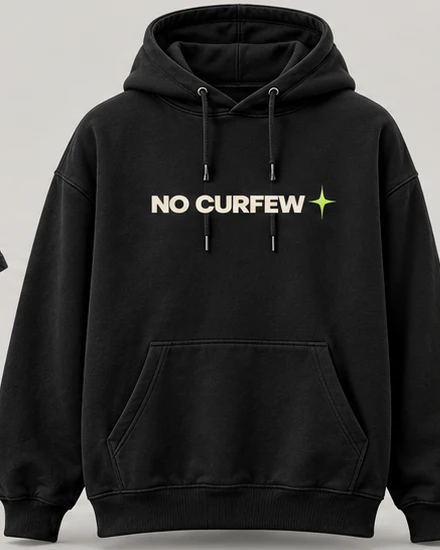

Keep your graphic clothing looking good

Read the garment label first
Different fabrics and print methods need different care. The instructions supplied with the actual garment take priority over a general guide. Ask about the print method if the seller has not provided it, particularly before using heat on the design.
Prepare the load
Empty pockets, close zips on other garments and separate clothing that may release colour. Turning a printed garment inside out can reduce rubbing against the artwork. Avoid packing the machine too tightly: clothes need room to move and rinse. Use the amount of detergent recommended on its packaging for the load and local water conditions.
Choose a gentle routine
Where the care label permits it, use a cool, gentle cycle and wash with similar colours. Do not assume that a new dark hoodie is colourfast. Avoid bleach unless the garment label explicitly allows it. Treat a stain carefully according to the fabric instructions instead of scrubbing directly over the print.
Be careful with drying and ironing
Reshape the garment and air-dry it when the care instructions allow. High heat can damage some prints, so do not use a tumble dryer simply because it is faster. Never put a hot iron directly on a graphic. Follow the manufacturer’s ironing instructions; if those are missing, ask before ironing the printed area.
Store it for the next wear
Let the garment dry completely before folding it. A heavy hoodie can stretch on a narrow hanger, so folding may be more suitable. Inspect loose seams early and keep sharp objects away from the print. Take a photo and contact the seller if a new garment has a defect; repeated washing is not a reliable fix for a manufacturing problem.
Have a product question? Ask The NO CURFEW team on WhatsApp.